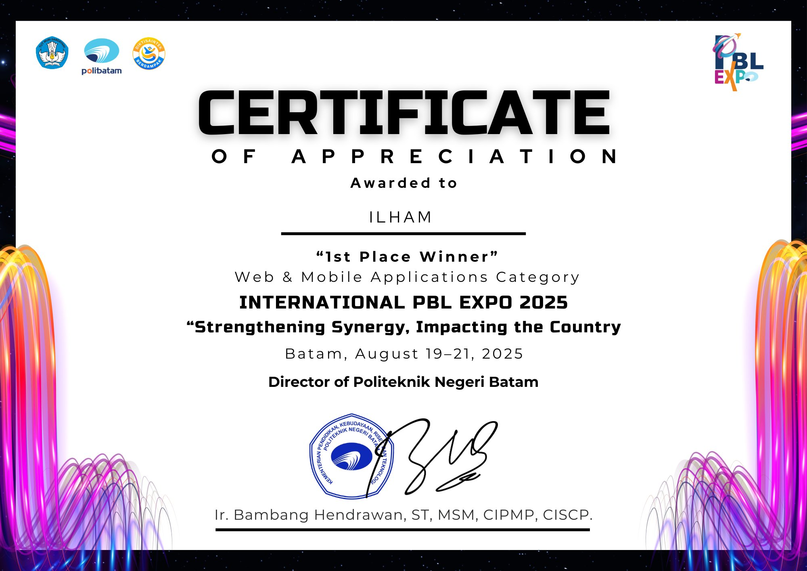
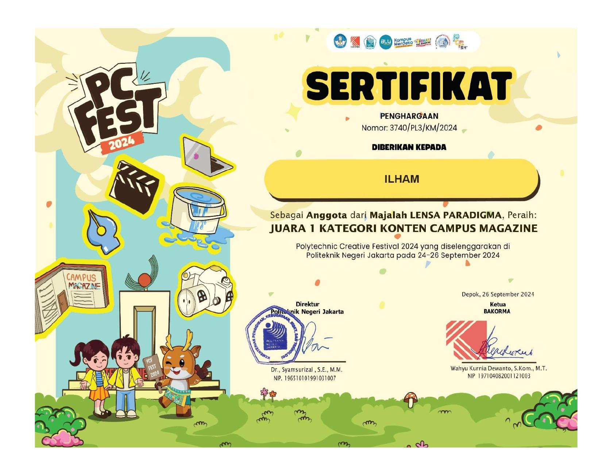
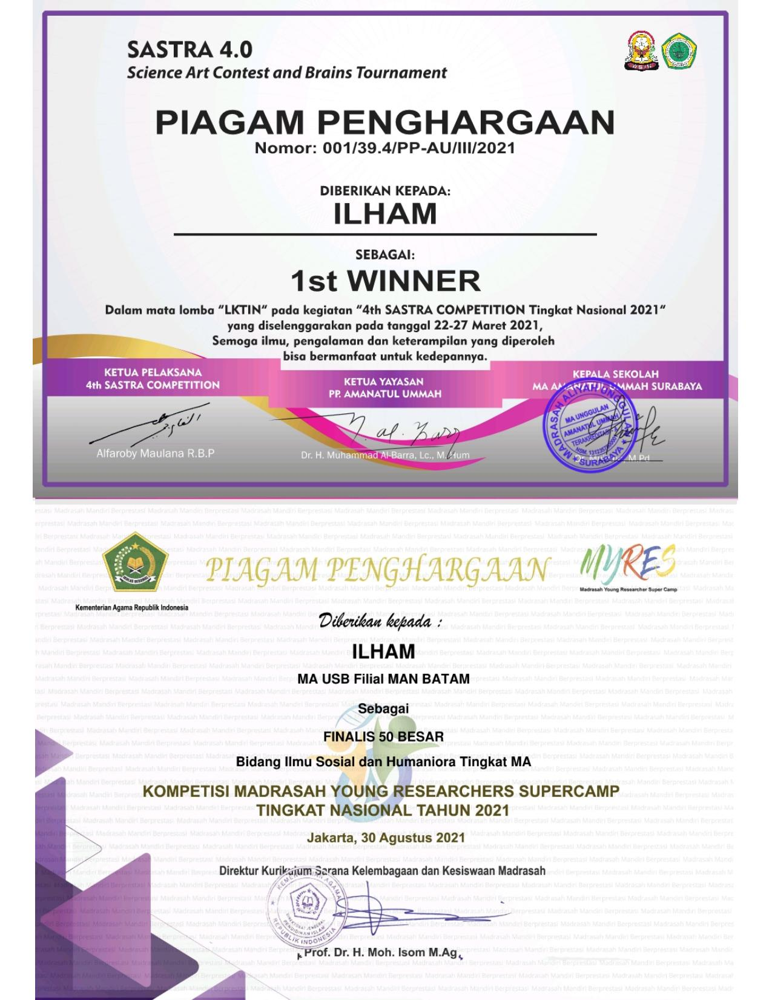
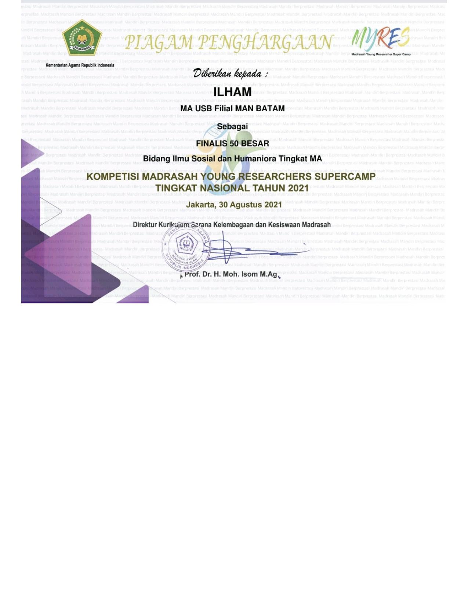
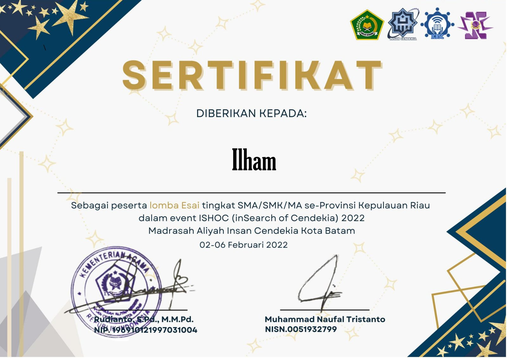
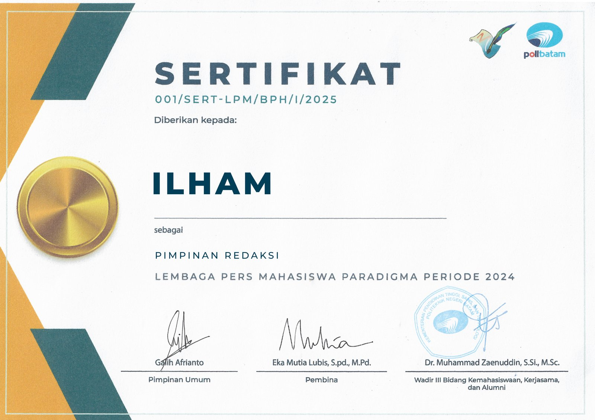
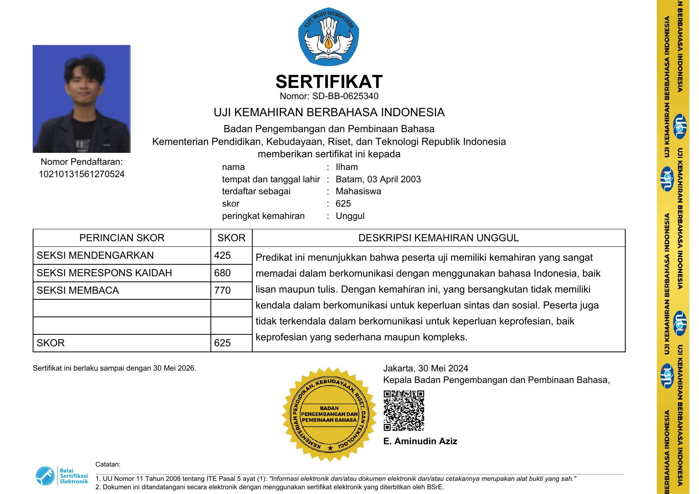

Ilham
Lulusan Multimedia Engineering Technology, Politeknik Negeri Batam, dengan pengalaman di balik kamera maupun di depan forum: memproduksi konten, memimpin organisasi, dan berbicara di depan publik.
Berpengalaman mengelola kepanitiaan dari balik layar dan senantiasa mengikuti perkembangan teknologi kreatif digital terkini.
02 — JENJANG PENDIDIKAN
Pendidikan
Lima pencapaian di Politeknik Negeri Batam, empat pada masa sekolah menengah.
Politeknik Negeri Batam
Jun 2022 — Jun 2026Bachelor of Applied Science, Multimedia Engineering Technology · IPK 3.90/4.00
taruh foto/video bukti di sini
Juara 1 sebagai Pembimbing, Kategori Campus Magazine, Polytechnic Creative Festival — September 2026.

1st Place – Web and Mobile Application Category, International PBL Expo 2025 - Developed Mahakarya VR Game.

1st Place in Content Category, Campus Magazine Competition, Polytechnic Creative Festival 2024.
taruh foto/video bukti di sini
Top 10 Finalist of Language Ambassador, Riau Islands Province 2024.
taruh foto/video bukti di sini
2nd Place in News Category, Campus Magazine Competition, Polytechnic Creative Festival 2023.
Madrasah Aliyah Negeri 2 Batam
Jun 2019 — Apr 2022Senior High School, Mathematics and Natural Sciences Major

1st Place, National Scientific Writing Competition Sastra 4.0 – 2021.

Top 50 Finalist, National Scientific Writing Competition – Madrasah Young Research Supercamp by Ministry of Religious Affairs – 2021.
taruh foto/video bukti di sini
Finalist, Indonesian Language Debate Competition – 2021.

Peserta Lomba Esai tingkat SMA/SMK/MA se-Provinsi Kepulauan Riau, ISHOC (inSearch of Cendekia) 2022 — Madrasah Aliyah Insan Cendekia Kota Batam.
03 — PENGALAMAN KERJA
Pengalaman
Disusun dari peran terbaru ke yang terdahulu.
-
Agu 2026 — Sekarang
Freelance — Content Creator & Videographer
Luwis Photo Studio · Batam, Indonesia
- Managed comprehensive social media content strategies, encompassing planning, editing, and direct publication.
- Operated multimedia production equipment, integrating ground videography (Sony A7III, Canon series, gimbals, basic lighting) with aerial capture (DJI Mini 4 and Mini 5 Pro).
📷 / 🎬
taruh dokumentasi kerja di sini -
Mei 2025 — Apr 2026
Content Creator, Videographer & Asisten Admin Frontdesk (Internship)
Luwis Photo Studio · Batam, Indonesia
- Responsible for planning content strategies, executing, editing, and publishing on social media, while also assisting front desk services by providing information, recommendations, and post-shoot technical explanations.
📷 / 🎬
taruh dokumentasi kerja di sini -
Jul 2022 — Jun 2024
Extracurricular Scientific Writing Instructor
MTs Negeri 1 Batam · Batam, Indonesia
- Mentored all students involved in extracurricular activities, providing support during both instructional sessions and competition readiness.
📷 / 🎬
taruh dokumentasi kerja di sini
04 — ORGANIZATIONAL EXPERIENCE
Organisasi
Peran yang pernah dan sedang dijalani di luar pekerjaan utama.
-
Nov 2024 — Sekarang
Public Relations Officer (Nov 2024 – Nov 2026)
Language Ambassador Association of Riau Islands Province
- Responsible for the design, publication, and media communication of the Duta Bahasa Association of Riau Islands Province.
📷📷📷📷📷📷📷📷 -
Feb 2023 — Feb 2026
Paradigma Student Press Organization
Politeknik Negeri Batam
- Organizational Advisor (Feb 2025 – Feb 2026) — Provided strategic guidance, performance evaluation, and executive mentorship to the management board.
- Editor in Chief (Feb 2024 – Feb 2025) — Directed end-to-end editorial operations encompassing reporting, editing, and digital content broadcasting.
- News Reporter (Feb 2023 – Feb 2024) — Executed campus journalism responsibilities, including field reporting, article writing, and conducting formal interviews.

📷📷📷📷📷📷📷
05 — KEGIATAN & PENGABDIAN
Kegiatan & Pengabdian
Kegiatan pengabdian masyarakat yang dilaksanakan bersama Paradigma Student Press.
taruh dokumentasi kegiatan di sini
Pengabdian Organisasi Mahasiswa — Pulau Ngenang, 2023.
taruh dokumentasi kegiatan di sini
Pengabdian Organisasi Mahasiswa — Kampung Galang Baru, 2024.
06 — PROYEK
Proyek
Dikelompokkan berdasarkan kategori. Kartu bergaris putus-putus merupakan slot yang belum terisi.
Tugas AkhirSemester 8 · Karya Ilmiah
Analisis Efektivitas Konten Behind the Scenes sebagai Strategi Branding pada Luwis Photo Studio
Menganalisis efektivitas konten behind the scenes (BTS) sebagai strategi branding digital Luwis Photo Studio di TikTok dan Instagram, menggunakan metode campuran (observasi digital, kuesioner EPIC Model, dan wawancara semi-terstruktur). Hasil analisis EPIC Model menunjukkan skor komposit 4,381 — kategori Sangat Efektif, dengan dimensi Communication meraih skor tertinggi.
⬇ Unduh PDF07 — SKILLS AND LANGUAGE
Keahlian
Kompetensi yang paling sering diterapkan, baik di lapangan maupun di balik layar.
08 — SERTIFIKASI
Sertifikasi
Kartu bergaris putus-putus merupakan templat yang belum terisi.

Uji Kemahiran Berbahasa Indonesia (UKBI) — Skor 625, Peringkat Unggul, 2024.
taruh gambar sertifikat di sini
Nama Sertifikasi — Penerbit, Tahun.
taruh gambar sertifikat di sini
Nama Sertifikasi — Penerbit, Tahun.
09 — KONTAK
Kontak
Beberapa cara untuk terhubung.